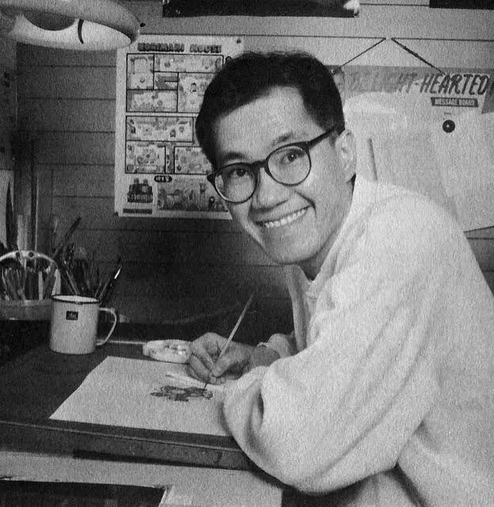

Akira Toriama
Akira Toriyama é um renomado mangaká japonês, conhecido principalmente por ser o criador do mangá e anime Dragon Ball. Ele nasceu em 5 de abril de 1955, em Nagoya, Japão. Além de Dragon Ball, Toriyama é responsável por várias outras obras de sucesso, como Dr. Slump, Dragon Quest: Dai no Daibouken, e diversas outras.
Toriyama começou sua carreira como assistente de outros mangakás antes de alcançar sucesso por conta própria. Seu estilo de arte distintivo e narrativa cativante o tornaram um dos mangakás mais influentes de sua geração. Dragon Ball, em particular, se tornou uma das franquias de mídia mais populares e lucrativas do mundo, com uma base de fãs globalmente extensa.

Timeline
- 1955 (5 de abril): Akira Toriyama nasce em Nagoya, Japão.
- 1974: Toriyama começa a trabalhar como assistente de mangakás, incluindo Kazuhiko Torishima, um editor da Shueisha.
- 1978: Ele publica sua primeira série de mangá original, "Wonder Island", na Weekly Shonen Jump, mas ela não obtém muito sucesso.
- 1980: Toriyama cria "Dr. Slump", uma série de mangá de comédia que se torna um grande sucesso e estabelece sua reputação como um dos principais mangakás do Japão.
- 1984: Ele inicia a serialização de "Dragon Ball" na Weekly Shonen Jump, que rapidamente se torna um fenômeno mundial, estabelecendo-o como um dos mangakás mais influentes da história. A série continuou até 1995.
- 1986: "Dragon Ball" é adaptado para uma série de anime, expandindo ainda mais sua popularidade.
- 1991: Toriyama lança "Dr. Slump Returns", uma continuação de sua série original "Dr. Slump".
- 1991: Ele colabora com o desenvolvimento de personagens e designs para a série de videogames "Dragon Quest".
- 1993: Toriyama cria "Dragon Ball Z", uma sequência direta de "Dragon Ball", que se torna ainda mais popular que sua série predecessora.
- 1995: "Dragon Ball Z" chega ao fim, encerrando a série "Dragon Ball" em sua totalidade.
- 1996: Toriyama colabora com a produção do filme "Dragon Ball: The Path to Power".
- 1997: Ele publica "Cowa!", um one-shot mangá.
- 1999: Toriyama cria "Neko Majin Z", uma série de one-shots que combina elementos de "Dragon Ball" e "Dr. Slump".
- 2009: Toriyama colabora novamente com a franquia "Dragon Quest", fornecendo designs de personagens para "Dragon Quest IX".
- 2013: Ele trabalha em "Dragon Ball Z: Battle of Gods" como designer de personagens e supervisor.
- 2015: Toriyama contribui com o roteiro e designs de personagens para "Dragon Ball Z: Resurrection 'F'".
- 2018: Ele colabora na produção de "Dragon Ball Super", uma nova série de anime baseada em "Dragon Ball".
- 2020: Toriyama é anunciado como o roteirista principal e supervisor de "Dragon Ball Super: Broly".